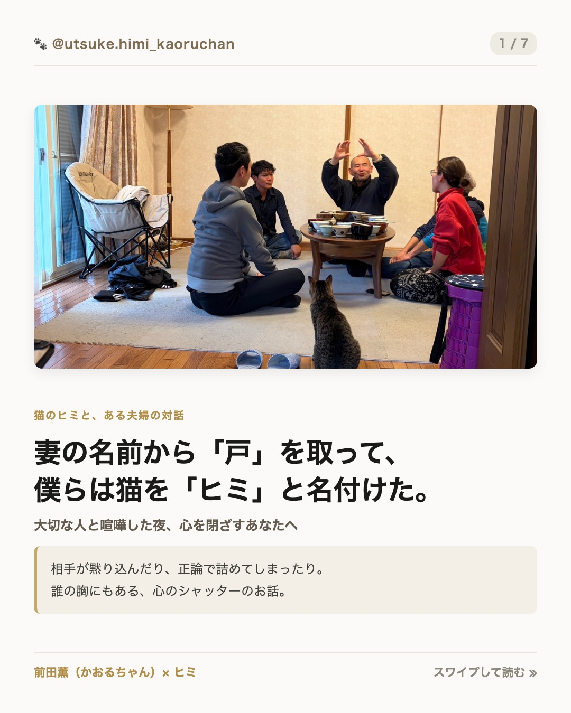

大切なパートナーや家族と衝突した時、相手が黙り込んでしまったり、「もうええわ」と殻に閉じこもってしまったり、あるいは自分が正論で相手を論破してしまって後味の悪い沈黙が流れたことはありませんか？
僕の奥さんの名前は「ひとみ（前田一美）」と言います。
漢字にすれば、「火（ヒ）」と「水（ミ）」の間にある、ドアの「戸（ト）」。
人は誰しも、傷つきたくない時、自分の心を守るためにその「戸（心のシャッター）」をガラガラバシャン！と閉ざしてしまいます。
天川村に移住する前、淡路島で中高生サッカー選手の寮長をしていた頃、山で捨てられていた一匹の子猫をみんなで保護しました。その時、少年たちに話したんです。「僕の奥さんの名前はひとみ。火と水の間にある『戸』を開けたら、ヒミになる。心を閉ざさず、人と人が調和してひとつになる名前や」と。そうして付けた名前が『ヒミ（火水）』でした。
このページは、相手を変えようとするものでも、自分が我慢するものでもありません。
閉ざしてしまった「戸」の正体に気づき、もう一度ふたりの間に心地よい風を通すための、生々しい喧嘩実況音声と4つのセルフ対話です。
テーマ：人生の目的と正論の衝突
「経済的自由を得るには努力して事業を起こさなアカン」と正論をまくしたてる薫ちゃんに対し、妻・ひとちゃんがすっと目を伏せて心を閉ざしてしまった瞬間の生実況。
テーマ：質問と心のシャッターの違い・戸を開ける対話
昨夜のわだかまりを抱えたままマイクの前に座ったふたり。「分からないから教えてという質問と、シャッターを閉めるのは違う！」とヒートアップしながら、お互いの本音と役割の違いに気づいていくプロセス。
相手が黙った時、あるいは衝突した時、あなたの内側はどちらに傾いていましたか？
① 相手を責めたり正論で打ち負かそうとした（火の暴走）
② 「どうせ分かってもらえない」と冷たく殻に閉じこもった（水の凍結）
ガラガラバシャンと閉めた心のドア。その奥で、あなたは本当は何を恐れ、何を守りたかったのでしょうか？（弱さを見せる怖さ、プライド、認められない悲しみ、孤独など）
勝ち負けやプライドを全部脱ぎ捨てて（すっぽんっぽんになって）、相手に差し出せる「素直な言葉」は何でしょうか？
「正しくあろうとすること」を手放したとき、口から出る一言を書いてみてください。
ふたりは同じになる必要はありません。火（前に進むエネルギー）と水（受け止める器・静けさ）。お互いの違いを「欠陥」ではなく「役割」として眺めた時、相手にどんな感謝が湧いてきますか？